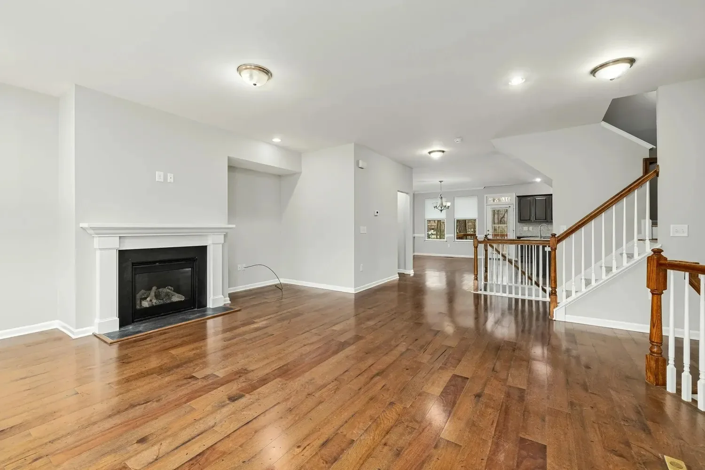
Fig. 00 · Fontdex · N = 2,924
Sans Serif 1,301Serif 617Display 484Handwriting 318Monospace 93Other 111
Jon von Gillern — Engineer · Inventor · AI consultant
Hard problems,
measured.
I go after the problems that other people call unsolvable. I get thrown in the deep end, I become the expert fast, and I ship. Type, cardiology, maize genomics, building lighting, and now AI.
Each point is a typeface, measured from its outlines.The same typefaces, grouped by category.
Sec 01Readouts06 values · since 1998
Hand me the problem everyone calls unsolvable.
Engineer and inventor. 28 years of hard problems, from fonts to genomes to AI.
TypeCardiologyGenomicsLightingAnalytics3DAI
R-01Count
4
patent applications
R-02Count
1
side project acquired by Monotype
R-03Δ down
97%
smaller genomic data files at Pioneer
R-04Δ up
800 → 10,000s
patients on the platform I ran as CTO
R-05Δ down
20–30 → 2
minutes to commission a room of lights
R-06Count
~10,000
measurements per typeface in the Font Genome
Sec 02Work modules07 modules · 2026
Selected work.
Each module runs live. Open one for the problem, the insight and the result.
0 · render buttonsLive
STL · 3MF · multi-color exportPhoto → CAD · parametric fit
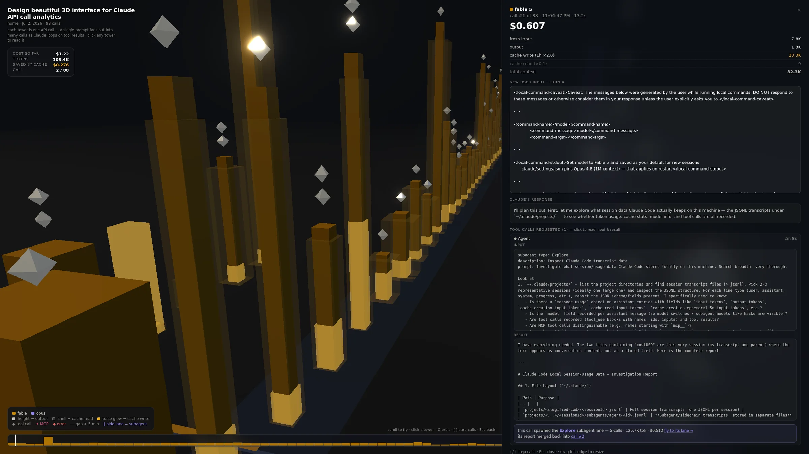
Reel 01 / 04
Wood type on a letterpress bed.
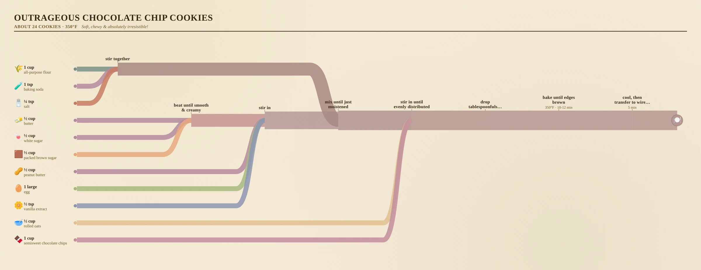
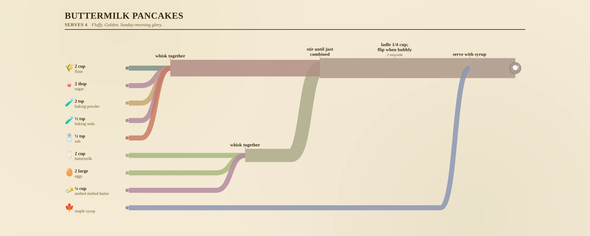
13 / 13
offline games
01020304050607080910111213
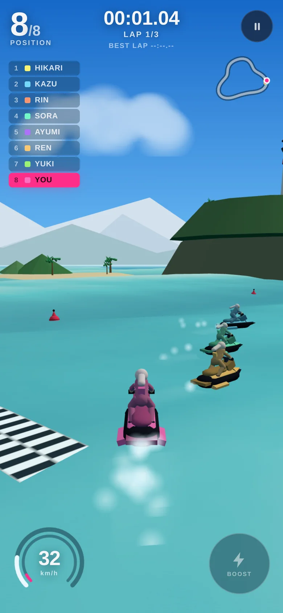
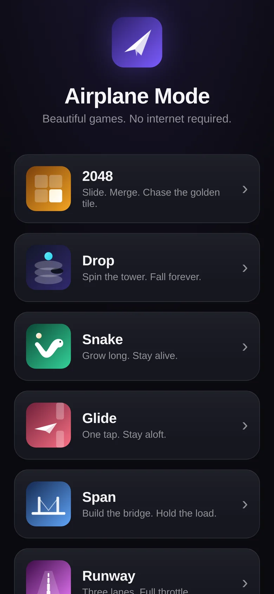
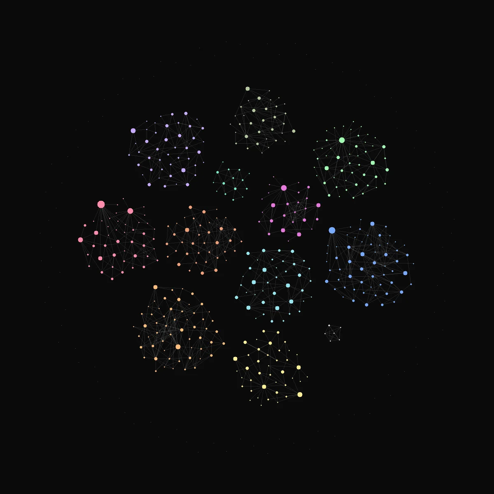
Sec 03Bench07 builds · 2026
On the bench.
Smaller builds and experiments.
- B-01 Fontdex Every Google Font, measured from its outlines.3,101 font files: stems, crossbars and x-heights from 500 scanlines through the H. 2026
-
B-02
Sculpture slicer
Slice a 28-million-triangle Bernini into a printable relief.The browser loads light versions; a Python server cuts the full 1.4 GB mesh with exact, sealed caps.
2026
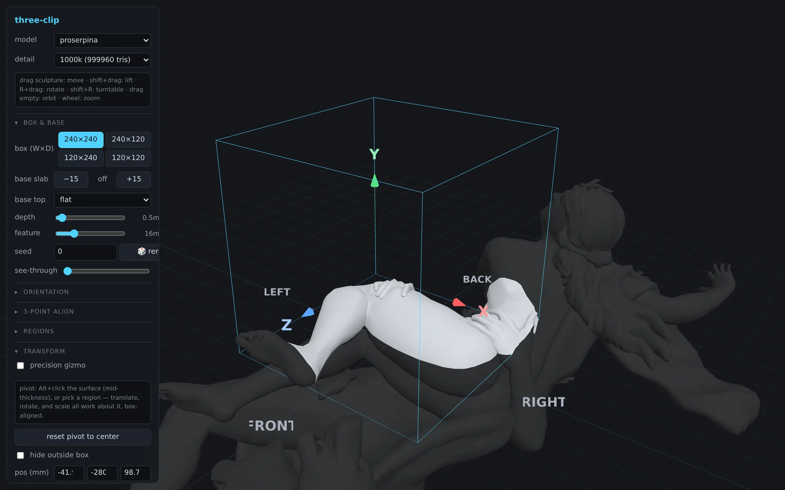
-
B-03
Spruce Pine
Gifts designed in the browser and printed on a desk.Parametric models with circuit-board traces and a spiral notebook insert. STL and two-color 3MF export.
2026
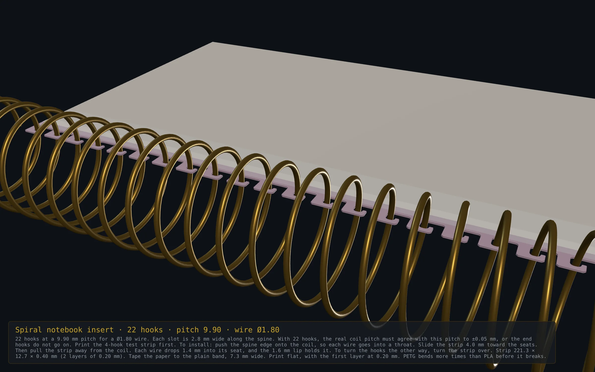
-
B-04
Truss
A slicer-native gyroid with a real second skin.179 cm³ of plastic against 202 cm³ for plain 15% gyroid, proven by slicing.
2026
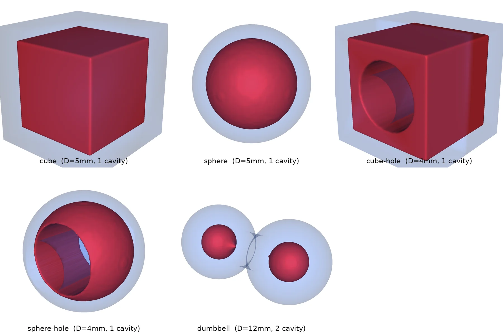
- B-05 ClubOS A country-club platform on one immutable ledger.Offline point of sale, a race-safe tee sheet, row-level tenancy, 63 tests. 2026
- B-06 Paper.js → TypeScript A library migration run by a team of coding agents.A dependency graph of 64 tasks and a 526-test safety net. 2026
- B-07 KV cache chapter An animated chapter for Brendan Bycroft's LLM Visualization.Why prompt caching makes long prompts cheap. 2026
Sec 04R&D logMonotype · 2022–2025
Type that reads differently to people and to machines.
4 patent applications at Monotype. HumanEyesOnly started as my side project; Monotype bought it and hired me.
Rendered · what a person seesGlyphs
HumanEyesOnly · Acquired by Monotype
Name: Satoshi Nakamoto
What a scraper readsIdle
Copy and paste
ƐコϘおᆵ グゆƨᄰɵっӊ
-
RD-01
HumanEyesOnlyAcquired by Monotype
Readable by people. Gibberish to machines.A scrambled font makes a PDF that you can read and a computer cannot. Copy the text and you paste noise. It started as my side project; Monotype bought it and hired me.
-
RD-02
Font Genome ProjectProvisional patent application
About 10,000 measurements of a typeface.The average, spread, minimum and maximum of every stroke's width and angle, plus hundreds of qualitative features. A typeface becomes data that a model can learn from.
-
RD-03
Glyph generationStarted the GenAI team
Draw a few letters. Get the whole alphabet.From a small set of designed glyphs, usually the words “Hamburger” or “Adhesion”, generate the rest of the Adobe Latin-2 character set.
-
RD-04
TypeTesterProvisional patent application
Image generation that respects the font.Diffusion models mangle text. A custom pipeline keeps exact fidelity to the font, so a customer sees what the typeface will really look like in context.
-
RD-05
Dynamic CaptionsProvisional patent application
Fonts are the voice of text.Captions that change font, add effects, and move the axes of variable fonts to match the emotion and the rhythm of the speaker. Built on multimodal language models.
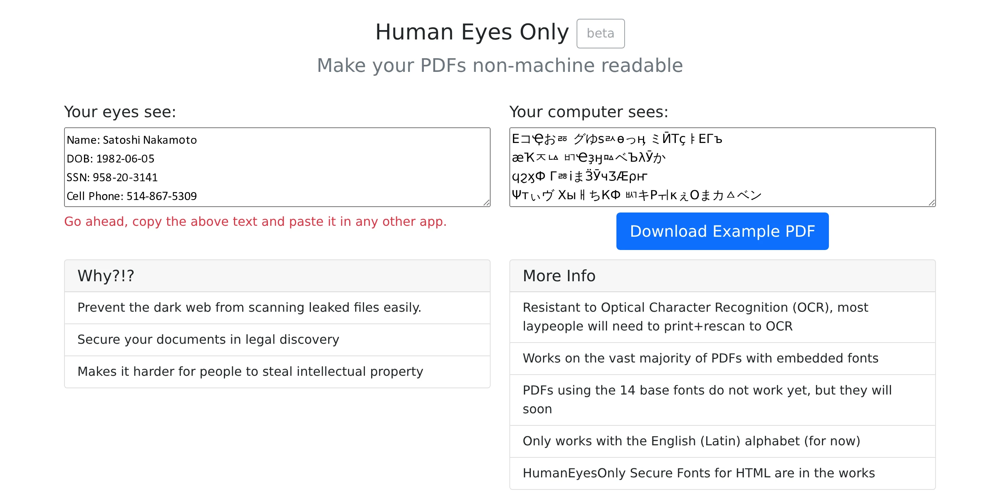
Sec 05Field work2007–2021 · before Monotype
Problems from the field.
Three older problems, drawn as instruments. The demos are illustrations of the method.
Lights that tell you their names.
Commissioning a room of networked lights took 20 to 30 minutes of matching MAC addresses. I made each light flash its own number sequence; a webcam pointed at the ceiling read them all.
1,400 MB1.4 GB → 30 MB · −97%
1.4 GB to 30 MB.
Research stations with poor connections needed genomic data in real time. Custom compression made the file 97% smaller. I also wrote a small language so 250 PhD maize breeders could define their own metrics.
From 800 patients to tens of thousands.
Remote monitoring for cardiology patients with chronic conditions, under HIPAA and HITECH. Millions of lab results reviewed. We built a dongle that read a blood-clotting meter's infrared port and ran on power taken from the phone's headphone jack.
Sec 06ArchiveShipped before · 2009–2013
Shipped before.
Earlier products. The old screenshots come from the Wayback Machine.
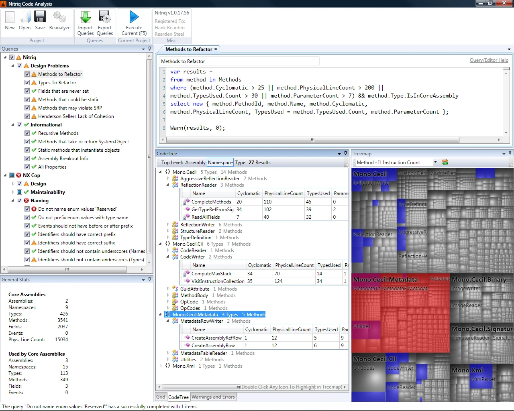
Static analysis for .NET, with a treemap I wrote from the research paper.
Write LINQ queries against your own code base. Mono.Cecil for deep reflection and a squarified treemap in WPF.
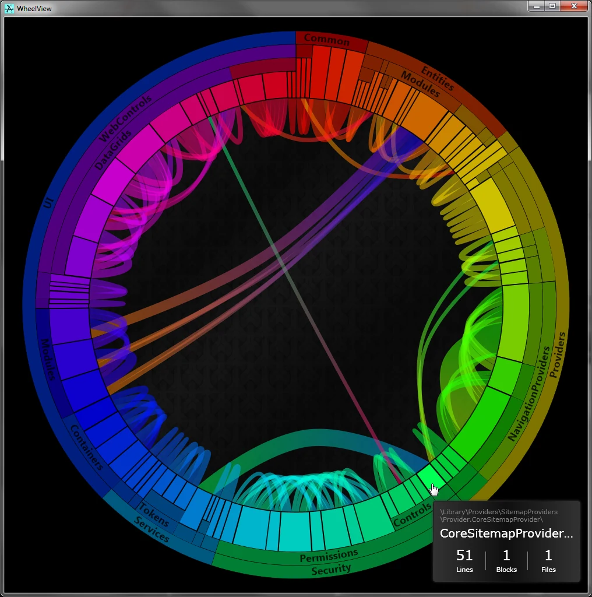
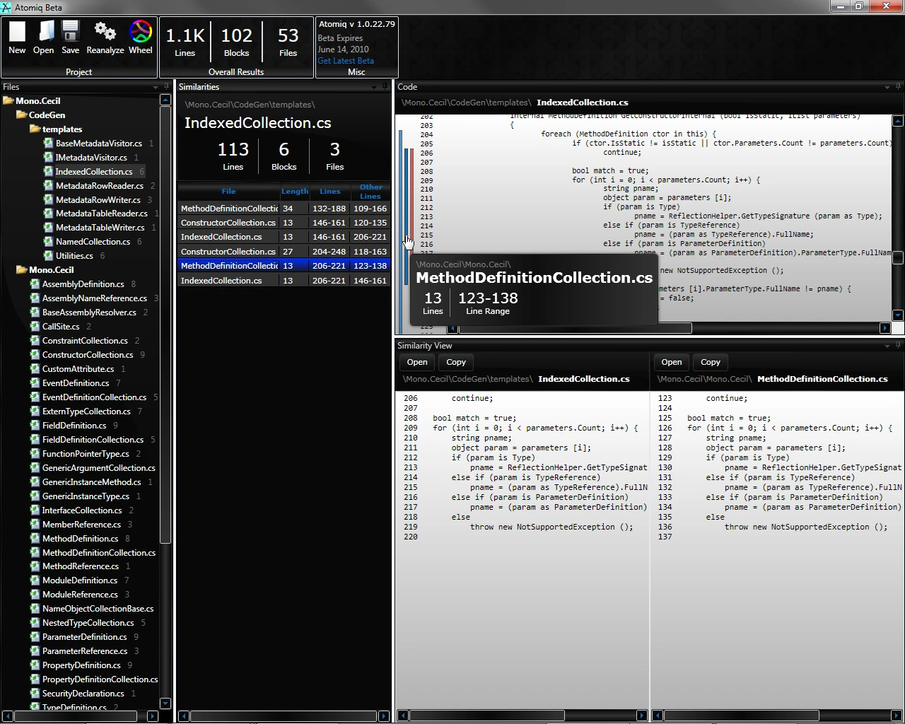
Find the copy-paste in a large code base.
A simple, effective way to find duplicate code, and a wheel that shows where the copies go.
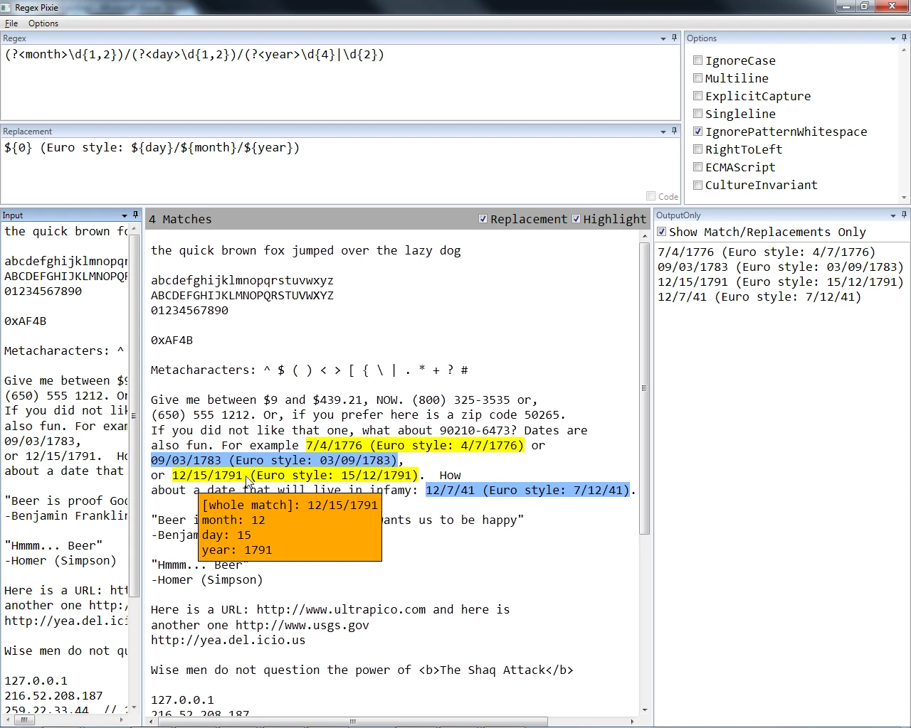
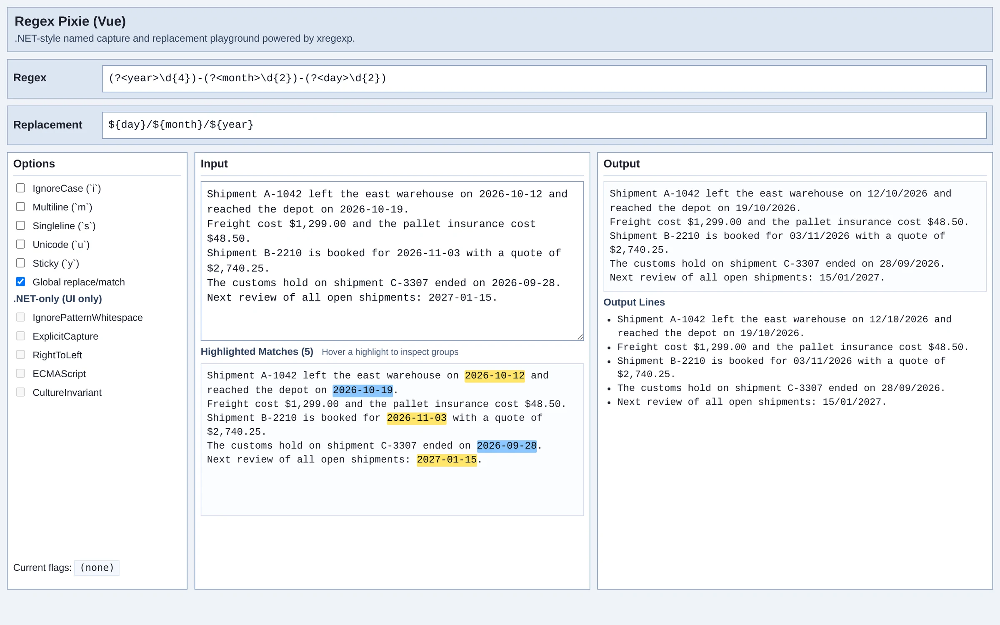
Live regular expressions with real support for named groups.
The original was a WPF app. I rebuilt it in Vue in 2026.
Millions of rows, filtered in real time, with animation that means something.
d3 and crossfilter, before it was common. Rebuilt in 2026: drop in a CSV, a model classifies the columns, and the dashboard builds itself.
One orthogonal corner. One known height. See Room Scale ↑
Furniture in an empty room, from one photo.
Monocular photogrammetry: one orthogonal corner and the ceiling height were enough to recover the room. Room Scale is its successor.
Sec 07Loggit log --graph · 1998 → now
28 years, one branch.
Newest first. Type · Cardiology · Genomics · Lighting · Analytics · 3D · AI.
-
von Gillern ConsultingHEADAI consultant
Custom AI with OpenAI, Anthropic and Gemini models. RAG, MCP servers, fine-tuning, n8n, Open WebUI and voice agents, on Azure and AWS.
-
MonotypePrincipal Engineer, R&D
Joined when Monotype acquired HumanEyesOnly. The Font Genome Project, TypeTester, Dynamic Captions, and a GenAI team for glyph generation.
-
von Gillern ConsultingConsultant
Freelance .NET and Azure work. Built HumanEyesOnly on the side.
-
WebCareHealthCTO
Remote patient monitoring for cardiology. Grew from 800 to tens of thousands of patients. Test-driven health code, custom meter hardware, a Xamarin app with Bluetooth meters.
-
IgorConsultant
The first cloud app for power-over-Ethernet lighting. Real-time room-use reports, automatic routines, and lights that identify themselves to a webcam.
-
ITA GroupConsultant
Sales incentive programs for Hyundai, Mazda and Verizon. Led the move to ASP.NET MVC and brought in TDD and SOLID.
-
Pioneer Hi-BredMolecular breeding consultant
Apps for 250 PhD maize breeders. 97% compression of genomic files, WPF visualizations of genetic flow, and a language for breeders' own metrics.
-
Wells Fargo · Accenture · SpindustryEarly career
Where it started.
Sec 08ContactOpen channel
> Bring me the problem nobody else will take.
von Gillern Consulting
AI that has to work on Monday morning, not only in the demo.
01AI systemsRAG, agents and MCP servers on OpenAI, Anthropic and Gemini models.
02EvaluationBenchmarks, judges and cost tracking, so you know which model earns its price.
03Automationn8n, Open WebUI and voice agents wired into the tools you already use.
04Prototype to productionNode, React, .NET and Python on Azure and AWS, with tests.
Claude CodeCursorOpenAIAnthropicGeminin8nAzureAWS